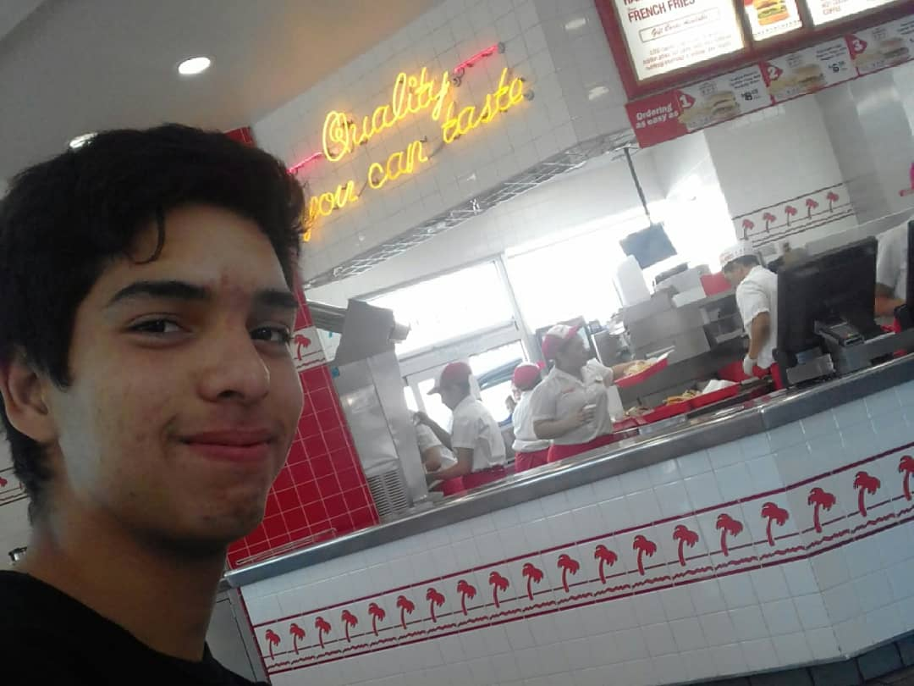
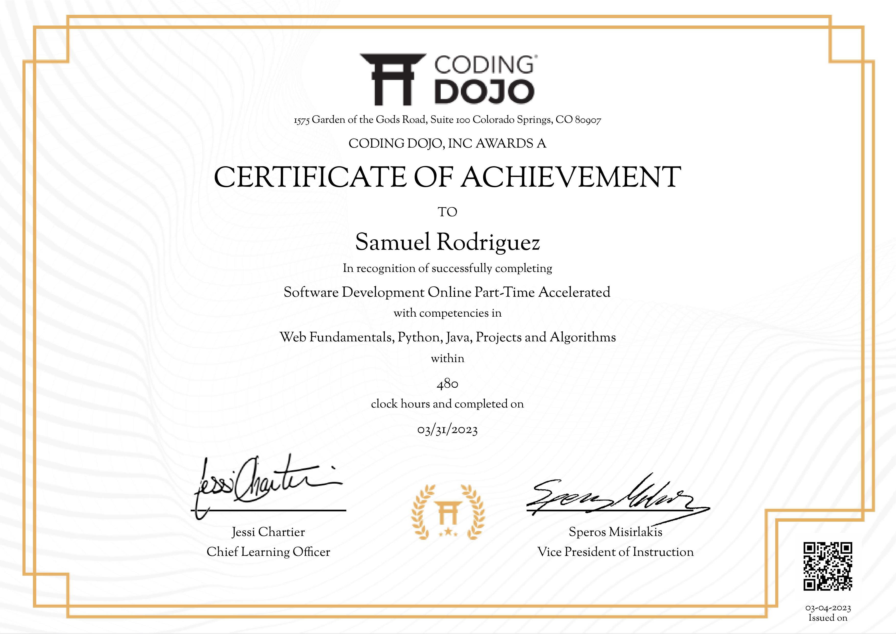

My Resume

Samuel Rodriguez
Summary
I enjoy learning new skills and working with people. I have experience in business management and working with small teams to complete objectives.
Education
- Steele Canyon Highscool 2016 - 2020
- Coding Dojo Bootcamp 2023 graduate
- Python
- Javascript
- Flask
- MySQL Workbench
- Spring Tool Suite
- Gitbash and Github
Work Experience
- Heaven's Windows
- Setting up/taking down food dispensory site in timely fashion
- Keeping track of and reporting inventory status
- Helping people find public resources
- Seaworld
- Assistant Supervisor
- Line Cook
- General Restaurant skills
- loading/unloading palets
- rotating stock
- opening/closing restaurant
- working front and back of house
- operating/cleaing fryer and dish machine
- Foster's Freeze
- Customer satisfaction
- Helping maintain 4.6 star average rating
- Maintaining clean patio for our guests
- Serving icecream!
Skills
- Fast Learner - took intensive coding classes with Coding Dojo
- Hard Worker - worked vast hours per week at Seaworld
- Punctual - I like showing up early =)
Certificates
- Coding Dojo Diploma

- Professional javascript 2023 Course

Other
About Me
Contact Me